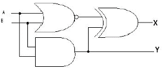
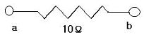
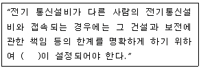
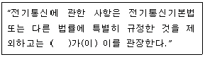

정보기기운용기능사 (2008-07-13 기출문제)
1과목: 전산 기초 이론
1. 기억장치의 데이터를 중앙처리장치에 저장하는 것을 무엇이라고 하는가?
- 로드(load)
- 스토어(store)
- 스프트(shift)
- 어드레싱(addressing)
(정답률: 68%)

2. 2진수 (1101.1)2를 10진수로 고치면?
- 13.1
- 13.2
- 13.5
- 13.75
(정답률: 67%)
3. A = 1, B = 0 일 때 논리회로 출력 X, Y의 값은?

- X = 0, Y = 0
- X = 0, Y = 1
- X = 1, Y = 0
- X = 1, Y = 1
(정답률: 56%)
4. 중앙처리 장치와 주기억 장치 사이의 속도차이를 줄이기 위한 것은?
- 주기억장치
- 보조기억장치
- 입·출력장치
- 캐시기억장치
(정답률: 81%)
5. 컴퓨터의 입력 또는 출력 장치와 거리가 먼 것은?
- 스캐너
- 모뎀
- 라인 프린터
- 키보드
(정답률: 81%)
6. 다음 중 응용소프트웨어에 속하는 것은?
- 언어번역 프로그램
- 유틸리티 프로그램
- 패키지 프로그램
- 운영체제
(정답률: 32%)
7. 네트워크에 접속된 다수의 컴퓨터들(PC, 워크스테이션 등)을 통합하여 하나의 거대한 병렬 컴퓨팅 환경을 구축하는 기법은?
- 이동 컴퓨팅
- 분산 컴퓨팅
- 컴퓨터 클러스터링
- 클라이언트/서버 환경
(정답률: 49%)
8. 컴퓨터를 데이터의 형태에 따라 분류한 것 중 옳게 나타낸 것은?
- 아날로그 컴퓨터, 대형 컴퓨터
- 아날로그 컴퓨터, 디지털 컴퓨터
- 범용 컴퓨터, 전용컴퓨터
- 초소형 컴퓨터, 중형 컴퓨터
(정답률: 87%)
9. 컴퓨터의 문자 코드 표현에 가중치 코드란 것이 있는데 다음 중 가중치 코드에 해당하지 않는 것은?
- 8421 코드
- 6421 코드
- 5421 코드
- 2421 코드
(정답률: 80%)
10. 다음 불 대수의 기본정리 중 성립하지 않는 것은?
- A·A = A
- A+0 = A
- A+1 = 1
- A+A = 1
(정답률: 70%)
2과목: 정보 기기 운용
11. 디스크가 바이러스에 감염되었는지를 진단하는 방법 중 틀린 것은?
- PC TOOLS 등을 통하여 바이러스 메시지를 찾아본다.
- PROGRAM 내에 이상한 문장이나 CODE가 있는지 검사한다.
- COMMAND. COM의 날짜가 최근 날짜로 바뀌었는지 확인한다.
- 바이러스의 감염메시지는 나타나지 않으므로 알 수 없다.
(정답률: 78%)
12. 100V 400W 의 전열기의 저항은 몇 Ω 인가?
- 25
- 50
- 75
- 95
(정답률: 68%)
13. 메모리 공간내에 기록된 자료에서 조건을 만족하는 자료를 찾아내는 것은?
- 치환
- 검색
- scroll
- align
(정답률: 88%)
14. 다음과 같은 회로에서 a로부터 b로 1A 의 전류가 흐른다면 a, b 사이의 전위차는 몇 V인가?

- 5
- 10
- 15
- 20
(정답률: 80%)
15. 주파수가 10kHz 인 신호의 주기는 몇 ms 인가?
- 1.01
- 0.1
- 1
- 10
(정답률: 69%)
16. PC를 이용해 인터넷에 접속한 상태에서 상대방과 1:1로 음성 또는 화상 통신이 가능한 전화기는?
- 가입전화기
- 인터넷 폰
- PCS
- 발신전용 전화기
(정답률: 78%)
17. 문자와 그림으로 구성된 화상정보 데이터베이스로부터 단말기를 통하여 사용자가 검색하는 대화형 양방향 화상 정보 시스템은?
- 텔레텍스트
- 오디오그래픽
- 비디오텍스
- 영상전화
(정답률: 57%)
18. 다음 중 전자우편의 기능이 아닌 것은?
- 메시지의 작성
- 메시지의 전송
- 메시지의 수신
- 메시지의 확인
(정답률: 68%)
19. 기기별로 규격에 규정된 기능이 정상적으로 발휘되는지를 시험하는 고장 진단 방식은?
- FLT 방식
- 마이크로 진단 방식
- 직렬 진단 방식
- 기능 진단 방식
(정답률: 75%)
20. 2Ω의 저항 10개를 직렬로 접속할 때의 합성 저항은 같은 저항 10개를 병렬로 연결했을 때의 합성저항의 몇 배가 되는가?
- 1
- 10
- 100
- 1000
(정답률: 67%)
21. 다음 중 팩시밀리의 종류 중 A4 한 장을 기준으로 해서 전송속도가 5초 이내인 것은?
- G1
- G2
- G3
- G4
(정답률: 80%)
22. MFC(다주파부호)전화기의 6번에 해당되는 주파수는?
- 저군주파수 : 697[Hz], 고군주파수 : 1366[Hz]
- 저군주파수 : 697[Hz], 고군주파수 : 1477[Hz]
- 저군주파수 : 770[Hz], 고군주파수 : 1336[Hz]
- 저군주파수 : 770[Hz], 고군주파수 : 1477[Hz]
(정답률: 49%)
23. 다음 중 눈으로부터 모니터까지의 거리로 가장 적당한 것은?
- 10cm ~ 20cm
- 20cm ~ 30cm
- 40cm ~ 50cm
- 80cm ~ 90cm
(정답률: 86%)
24. 네트워크 관리자가 중앙에서 IP 주소를 관리하고 할당하며 컴퓨터가 네트워크의 다른 장소에 접속되었을 때 자동으로 새로운 IP 주소를 보내줄 수 있게 해주는 서버는?
- SIP 서버
- DNS 서버
- WEB 서버
- DHCP 서버
(정답률: 65%)
25. 복사기의 복사 과정에 대한 설명으로 옳지 않는 것은?
- 대전(electrification) : 감광체가 감광성(정전기)을 가지도록 고압의 전류를 흘려보내는 것
- 노광(exposure) : 원화의 음영에 따른 반사광을 감광체에 쪼여 정전 잠상(electrostatic latent image)을 만드는 것
- 전사(transcribe) : 일반 용지에 열을 가해 토너에 내포되어 있지 않는 수지를 녹여서 정착시키는 것
- 제전(electrostatic discharge) : 감광체에 남아있는 정전기(static electricity)를 제거시키는 것
(정답률: 60%)
26. 정보기기의 운용 및 보존 관리를 위한 작업 계획시 고려할 사항이 아닌 것은?
- 회선이나 시설의 불량 상태
- 계절적, 환경적인 특수 사항
- 운용 보존 요원의 경제 수준
- 가동 시설 수와 시설의 확충 계획
(정답률: 74%)
27. 바이러스(Virus) 자신의 자기 복제, 자체 메일 전송, 정보 수집 기능 등을 갖추고 있는 바이러스는?
- 웜(Worm)
- 백도어(Backdoor)
- 스팸(SPAM)
- 매크로(MACRO)
(정답률: 82%)
28. 전원 회로에서 교류를 직류로 변환시켜 주는 회로는?
- 정류 회로
- 인버터 회로
- 컨버터 회로
- 주파수 컨버터 회로
(정답률: 67%)
29. 시간분할 다중화기(TDM)의 특징이 아닌 것은?
- 데이터의 전송 시간을 일정한 시간폭으로 나누어 전송 한다.
- 다중화기와 단말기간의 속도차를 극복하기 위한 버퍼가 필요하다.
- 저속도(1200 baud)의 비동기식 멀티포인트 방식에 주로 이용된다.
- 포인트 투 포인트 시스템에 가장 많이 이용된다.
(정답률: 71%)
30. 어떤 물질에 전류가 흐를 때 물질 내부의 전자의 이동을 방해하는 성질을 무엇이라고 하는가?
- 전압
- 저항
- 전력
- 주파수
(정답률: 82%)
3과목: 정보 통신 일반
31. 통신에서 전송품질의 중요한 척도가 되는 S/N 비를 바르게 설명한 것은?
- 원 신호에 대한 잡음의 상대적인 세기 비율이다.
- 정상 전송속도에 대한 지연속되의 비율이다.
- 송신신호에 대한 수신신호의 세기 비율이다.
- 출력신호 파형의 일그러짐을 말한다.
(정답률: 65%)
32. 전송선로 조건 중 선로의 감쇠량이 최소로 되는 경우는?(단, R : 선로의 저항, L : 선로의 인덕턴스, C : 선로의 정전용량, G : 선로의 누설컨덕턴스)
- RL = GC
- LG = RC
- LC = GR
- LG =GR
(정답률: 82%)
33. 전자상거래에 관한 설명으로 적합하지 않은 것은?
- 시간과 공간의 제약을 받지 않는다.
- 전 세계 네티즌을 상대로 거래를 할 수 있다.
- 인터넷이나 통신망 환경 구축과 무관하다.
- 정보의 보호를 위한 암호화 기법이 중요하다.
(정답률: 77%)
34. 다음 중 정보통신 네트워크 시스템과 거리가 먼 것은?
- 리피터
- 라우터
- 허브
- 스캐너
(정답률: 80%)
35. 다음 중 1차 변조된 다수의 통화로를 일괄적으로 다시 변조하는 것은?
- 2차 검파
- 혼변조
- 통화변조
- 군변조
(정답률: 52%)
36. ELA RS-232C 25핀 커넥터의 핀 번호와 이의 기능에 대한 표시로 틀린 것은?
- 4 : 송신요구(RTS)
- 2 : 수신데이터(RXD)
- 7: 신호용 접지
- 5 : 송신준비완료(CTS)
(정답률: 62%)
37. 회선을 임차하여 네트워크를 구축하고 부가가치가 높은 서비스를 제공하는 통신망을 뜻하는 것은?
- VAN
- ISDN
- CATV
- LAN
(정답률: 60%)
38. 데이터가 발생할 때마다 즉시 입력하여 그 처리 결과를 바로 얻는 방법은?
- 실시간(Real time)처리
- 일괄(Batch)처리
- 오프라인(Off-line)처리
- 시분할(Time division) 배치처리
(정답률: 85%)
39. 다음 중 데이터 통신시스템의 3가지 기본 구성 요소가 아닌 것은?
- 전송회선
- 단말장치
- 원격장치
- 중앙처리장치
(정답률: 57%)
40. 다음 중 데이터통신의 이용 형태로 적합하지 않은 것은?
- 원격지에서 정보를 컴퓨터에 입력시키고 작업 결과를 라인 프린터로 인쇄하는 일
- 컴퓨터 네트워크를 이용한 교육
- 전화상의 아날로그 음성통화
- 데이터 단말장치 이용자 간의 정보교환
(정답률: 69%)
41. 다음 중 정보화 사회의 특징으로 가장 거리가 먼 것은?
- 제조업이 주로 발전하는 사회이다.
- 분산된 네트워크 사회이다.
- 지식 창조적 사회이다.
- 개방형 다기능 사회이다.
(정답률: 72%)
42. 다음 통신케이블 중 LAN 용으로 가장 많이 사용 되는 것은?
- CCP 케이블
- FS 케이블
- UTP 케이블
- 나선 케이블
(정답률: 72%)
43. 다음 중 에러(Error)검출방식이 아닌 것은?
- CRC 방식
- 펄스부호 방식
- 수평패리티 방식
- 정(定)마크부호 방식
(정답률: 53%)
44. 음성 등의 아날로그 신호를 디지털신호로 변환하여 전송하는 변조방식은?
- 위상변조(PM)
- 펄스부호변조(PCM)
- 주파수변조(FM)
- 진폭변조(AM)
(정답률: 69%)
45. 데이터 전송시 통신신호의 진폭 일그러짐이나 전송지연에 의한 일그러짐을 어느 정도 보완해 주기 위한 것은?
- 등화회로
- 여파회로
- 분파회로
- 통신회로
(정답률: 60%)
46. 무궁화위성(3호기)에 관하여 가장 거리가 먼 것은?
- 서비스 지역은 주로 한반도 지역이다.
- 통신용 중계기와 방송용 중계기가 탑재되어 있다.
- 위성의 위치는 동경 116도 부근이다.
- 위성의 수명은 영구적이다.
(정답률: 79%)
47. 인터넷상에서 하이퍼텍스트를 전송하기 위한 프로토콜은?
- DDCMP
- SNMP
- HDSC
- HTTP
(정답률: 86%)
48. FTP(File Transfer Protocols)는 OSI 7계층 중 어느 계층에 속하는가?
- 데이터링크 계층
- 네트워크 계층
- 세션 계층
- 응용 계층
(정답률: 52%)
49. 다음 중 데이터 전달의 기본 5단계를 순서대로 열거한 것은?
- 회선연결→링크확립→메시지전달→링크단절→회선단절
- 링크확립→회선연결→메시지전달→회선단절→링크단절
- 회선연결→링크단절→메시지전달→링크확립→회선단절
- 링크확립→회선단절→메시지전달→회선연결→링크단절
(정답률: 74%)
50. 데이터 교환방식 중 순간적인 대량의 데이터 전송에 가장 적합한 것은?
- 패킷교환
- 데이터를 위한 회선교환
- 메시지 교환
- 음성을 위한 회선교환
(정답률: 60%)
4과목: 정보 통신 업무 규정
51. 다음 ( ) 안에 들어갈 내용으로 가장 적합한 것은?

- 기준점
- 분계점
- 접지점
- 접속점
(정답률: 82%)
52. 다음 중 전기통신사업자가 다른 전기통신사업자로부터 전기통신설비의 상호접속에 관한 요청이 있는 경우 조치 사항으로 가장 적합한 것은?
- 전기통신사업자 간 협정을 체결하여 상호접속을 허용 한다.
- 전기통신사업자가 방송통신위원회에 신고한 후 상호 접속을 허용한다.
- 전기통신사업자가 방송통신 위원회에 승인을 받은 후 상호접속을 허용한다.
- 지식경제부장관이 고시한 기술 기준에 적합하면 임의로 상호접속을 허용한다.
(정답률: 44%)
53. 전기통신을 행하기 위하여 계통적·유기적으로 연결·구성된 전기통신설비의 집합체를 무엇이라고 하는가?
- 전기통신기자재
- 정보통신기기
- 통신설비
- 전기통신망
(정답률: 74%)
54. 다음 중 전기통신기본법의 제정목적으로 적합하지 않은 것은?
- 전기통신을 효율적으로 관리
- 공공복리의 증진에 이바지
- 전기통신의 발전을 촉진함
- 전기통신업체의 수익구조 개선
(정답률: 73%)
55. 다음 중 보편적 역무의 내용이 아닌 것은?
- 유선전화서비스
- 저궤도위성통신서비스
- 긴급통신용 전화서비스
- 장애인·저소득층 등에 대한 요금감면 전화서비스
(정답률: 62%)
56. 다음 중 정보통신공사업의 등록기준에 속하지 않는 것은?
- 자본금
- 사무실
- 공사실적
- 기술능력
(정답률: 73%)
57. 전기통신기자재의 형식승인을 얻지 아니하고 이를 제조·판매 또는 수입한 자의 벌칙으로 옳은 것은?
- 500만원 이하의 벌금
- 1년 이하의 징역 또는 1천만원 이하의 벌금
- 2년 이하의 징역 또는 2천만원 이하의 벌금
- 3년 이하의 징역 또는 3천만원 이하의 벌금
(정답률: 51%)
58. 다음 중 방송통신위원회가 기간통신사업자를 허가함에 있어 종합적으로 심사하여야 하는 사항이 아닌 것은?
- 공공의 이익과 안전
- 재정 및 기술적 능력
- 전기통신설비의 규모의 적정성
- 기간통신역무 제공계획의 타당성
(정답률: 48%)
59. 다음 ( )안에 들어갈 내용으로 가장 적합한 것은?

- 지식경제부장관
- 방송통신위원회
- 국무총리
- KT(한국통신)
(정답률: 75%)
60. 다음 ( ) 안에 들어갈 내용으로 가장 적합한 것은?(문제 오류로 3번을 정답 처리 합니다. 인터넷 검색을 통해서 빠른 시간안에 문제를 복원해 두겠습니다.)
- 시방서
- 계획서
- 설계도서
- 기술기준
(정답률: 80%)